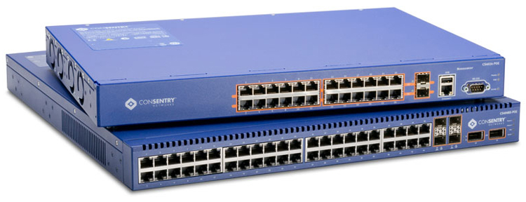
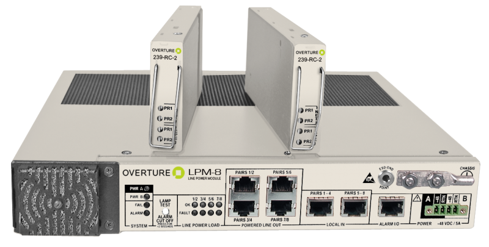
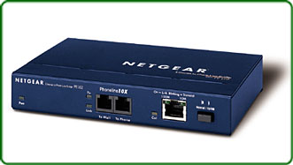
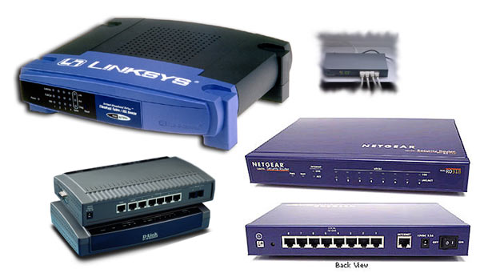

Switch - nazywany czasami przełącznikiem bądź hubem przełączającym. Urządzeń tych używa się głównie w sieciach, które okablowane są tzw. skrętką. Są urządzeniami służącymi do podłączania stacji sieciowych głównie w topologii gwiazdowej oraz do rozładowywania ruchu sieciowego i eliminowania kolizji (pod tym względem sprawdzają się lepiej od mostów). Switche posiadają zwykle kilkanaście portów (najczęściej 48). Używane mogą być do podłączania stacji końcowych, hubów lub innych przełączników. Switche przyczyniają się zmniejszanie obciążenia sieciowego, przez podział sieci na mikrosegmenty oraz tzw. komutowanie. Proces ten polega to na tym, że do pojedynczego segmentu może być przydzielona tylko jedna stacja robocza, co minimalizuje rywalizację o dostępy do medium. Użytkownicy otrzymują wówczas pełną szerokość pasma do swojego użytku. Każdy port w switchu to wejście do pojedynczego segmentu sieci. Przełączniki eliminują więc wąskie gardła w sieciach lokalnych dotyczące węzłów, przez które dane z centralnych serwerów przekazywane są do określonych stacji. Inteligentne, nowoczesne switche mają dwa tryby przełączania: store and foreward oraz fast forward. W trybie fast forward ramka jest natychmiast wysyłana po otrzymaniu docelowego adresu. Takie rozwiązanie umożliwia wysyłanie ramek błędnych lub biorących udział w kolizjach. W trybie store and foreward ramki są sprawdzane pod względem sumy kontrolnej. Ramki błędne oraz te, które biorą udział w kolizji są eliminowane. Do istotnych wad tego trybu należą dość spore opóźnienia występujące w transmisji. Inteligentne przełączanie charakteryzuje się tym, że switch standardowo pracuje w trybie fast forward, ale jeżeli liczba błędów przekroczy kilkanaście w ciągu sekundy, automatycznie przełącza się na metodę store and foreward. Jeżeli liczba błędów spadnie poniżej tego poziomu, switch powróci do metody fast forward.
Repeater - jest urządzeniem wzmacniającym i regenerującym sygnały przesyłane kablem, które na skutek jego długości ulegają zniekształceniom. Repeater więc fizycznie zwiększa rozmiary sieci. Urządzenie powtarza odebrane sygnały oraz wzmacnia je. Proces ten polega na zwiększaniu poziomów odbieranych przebiegów falowych bez modyfikacji częstotliwości. Repeter jest najprostszym urządzeniem tego typu. Może on łączyć sieci posiadające identyczną architekturę, stosujące te same protokoły oraz techniki transmisyjne. Umożliwia jednak łączenie segmentów sieci posiadające różne media transmisyjne. Instalacja urządzenie jest stosunkowo prosta i nie wymaga konfiguracji, gdyż sam repeter jest przezroczysty dla urządzeń sieciowych. Repetery traktowane są jako węzły w każdym z podłączonych do niego segmentów. Urządzenie potrafi dostosować się do prędkości transmisji przebiegających w sieci oraz przekazywać pakiety z taką samą prędkością, co sprawia, że jest on wolniejszy od np. mostu. Repeter działa w warstwie fizycznej sieci, dlatego jest możliwości są niewielkie. Nie jest urządzeniem inteligentnym, więc nie jest w stanie zapewnić izolacji pomiędzy segmentami, nie potrafi izolować również uszkodzeń oraz nie dokonuje filtracji pakietów, w związku z tym informacje, często posiadające charakter lokalny, przenikają do innych segmentów, bez potrzeby je obciążając.
Bridge - czyli most, jest urządzeniem posiadającym 2 bądź więcej portów, które służy do scalania segmentów sieci. Bridge na bieżąco identyfikuje porty oraz kojarzy określone komputery. Umożliwia podniesienie wydajności oraz zwiększenie maksymalnych odległości w sieci. Mosty są stosunkowo proste w instalacji, gdyż nie potrzebują konfiguracji. Są to wysoce elastyczne i adaptowalne urządzenia, gdyż podczas dodania nowych protokołów potrafią w automatyczny sposób się dostosować. Realizują proste filtrowanie, sprawdzają adres umieszczony w ramce ethernetowej lub Token Ring oraz określają segment, do jakiego należy dany pakiet przesłać. Jeżeli więc dany komputer wysyła wiadomość z jednego segmentu, most dokonuje analizy zawartych w niej adresów i jeżeli nie ma takiej potrzeby to nie rozsyła jej do innych segmentów, co zapobiega krążeniu w sieci zbędnych pakietów. Mosty nie potrafią zablokować jednak pakietów uszkodzonych, ani też przeciwdziałać zatorom, które powstają w momencie, gdy klika stacji roboczych próbuje w jednym czasie rozesłać dane w trybie rozgłoszeniowym. Brigde posiada technikę uczenia się. Po podłączeniu do sieci wysyła sygnały z żądaniem odpowiedzi do wszystkich. Na podstawie tych odpowiedzi oraz przez analizę przepływu pakietów, tworzona jest tablica adresów komputerów znajdujących się w sieci. Przy przesyłaniu informacji mostek pobiera z tablicy adres komputera odbiorcy, zapobiegając rozsyłaniu pakietów do wszystkich segmentów sieci. Wyróżnia się mosty przezroczyste, realizujące routing źródłowy oraz LSB. Bridge przezroczyste nazywane także uczącymi się bądź inteligentnymi, używane są w sieciach Ethernet. Zaraz po instalacji urządzenie zaczyna proces rozpoznawania topologii sieciowej. Mosty LSB również wykorzystywane są w sieciach typu Ethernet. Umożliwiają używanie rezerwowej linii, nie wykorzystanej w mostach przezroczystych, co powoduje, że są one wydajniejsze. Mosty, które realizują routing źródłowy funkcjonują w sieciach typu Token Ring. Oprócz informacji na temat miejsca docelowego pakietów, most w tym przypadku wie również jaką drogą je przesłać, lecz to nie urządzenie określa optymalną trasę, ale odczytuje ją z danych, które zawarte są w pakietach.
Router - to najbardziej zaawansowane technologicznie urządzenie używane do łączenia fragmentów sieci oraz zwiększania jej rozmiarów. Router to urządzenie konfigurowalne, pozwalające na sterowanie przepustowością sieci oraz zapewniające pełną izolację między segmentami. Router posiada podobne funkcje jak most. Głowna różnica polega przede wszystkim na tym, że routery stosowane są do przekazywania danych między sieciami, które oparte są na różnych topologiach i są bardziej zaawansowane technicznie. Routery stanowią integralną część Internetu, ponieważ jest on złożony z tysięcy sieci działających w oparciu o różne technologie sieciowe. W przypadku sieci rozległych informacje transmitowane są z jednego węzła do drugiego, lecz nie do wszystkich. Na swej drodze napotykają wiele węzłów pośredniczących, mogą być również transmitowane różnymi trasami. Jednym z takich węzłów jest właśnie router, który za zadanie ma przesłać dane najlepszą z możliwych tras. Główny zaletami routerów są: umiejętność wyboru optymalnej trasy pomiędzy odbiorcą a nadawcą, ochrona danych (kodowanie, zapory), transakcja protokołów, usuwanie pakietów nie posiadających adresów oraz filtrowanie pakietów.
Hub - to urządzenie posiadające wiele portów, które służą do podłączania stacji roboczych pracujących głownie w topologii gwiazdowej. W sieci gdzie pracuje hub nie istnieją bezpośrednie połączenia między stacjami. Stacje robocze podłączone są z wykorzystaniem
jednego kabla prowadzącego do głównego huba, który w chwili nadejścia sygnału rozprowadza go na wszystkie linie wyjściowe. Wyróżnia się huby pasywne - nie wymagające zasilania i tylko przekazujące sygnały oraz aktywne - wzmacniające sygnały lecz
wymagające zasilania.


Modemy


Konwertery mediów